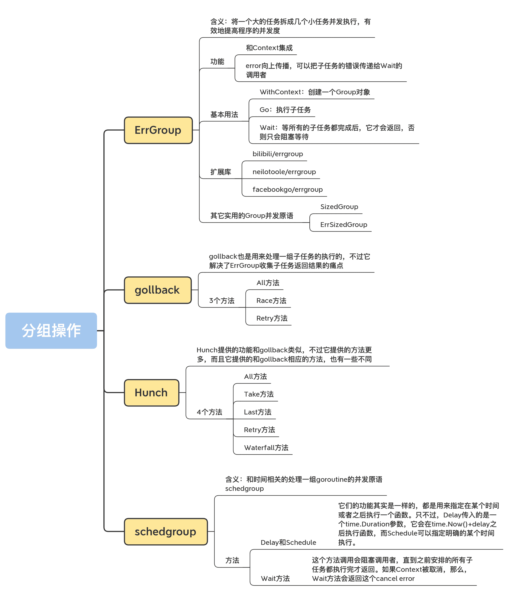

18 | 分組操作：處理一組子任務，該用什麼併發原語？
你好，我是鳥窩。
共享資源保護、任務編排和消息傳遞是 Go 併發編程中常見的場景，而分組執行一批相同的或類似的任務則是任務編排中一類情形，所以，這節課，我專門來介紹一下分組編排的一些常用場景和併發原語，包括 ErrGroup、gollback、Hunch 和 schedgroup。
我們先來學習一類非常常用的併發原語，那就是 ErrGroup。
ErrGroup
ErrGroup是 Go 官方提供的一個同步擴展庫。我們經常會碰到需要將一個通用的父任務拆成幾個小任務併發執行的場景，其實，將一個大的任務拆成幾個小任務併發執行，可以有效地提高程序的併發度。就像你在廚房做飯一樣，你可以在蒸米飯的同時炒幾個小菜，米飯蒸好了，菜同時也做好了，很快就能吃到可口的飯菜。
ErrGroup 就是用來應對這種場景的。它和 WaitGroup 有些類似，但是它提供功能更加豐富：
- 和 Context 集成；
- error 向上傳播，可以把子任務的錯誤傳遞給 Wait 的調用者。
接下來，我來給你介紹一下 ErrGroup 的基本用法和幾種應用場景。
基本用法
golang.org/x/sync/errgroup 包下定義了一個 Group struct，它就是我們要介紹的 ErrGroup 併發原語，底層也是基於 WaitGroup 實現的。
在使用 ErrGroup 時，我們要用到三個方法，分別是 WithContext、Go 和 Wait。
1.WithContext
在創建一個 Group 對象時，需要使用 WithContext 方法：
func WithContext(ctx context.Context) (*Group, context.Context)
這個方法返回一個 Group 實例，同時還會返回一個使用 context.WithCancel(ctx) 生成的新 Context。一旦有一個子任務返回錯誤，或者是 Wait 調用返回，這個新 Context 就會被 cancel。
Group 的零值也是合法的，只不過，你就沒有一個可以監控是否 cancel 的 Context 了。
注意，如果傳遞給 WithContext 的 ctx 參數，是一個可以 cancel 的 Context 的話，那麼，它被 cancel 的時候，並不會終止正在執行的子任務。
2.Go
我們再來學習下執行子任務的 Go 方法：
func (g *Group) Go(f func() error)
傳入的子任務函數 f 是類型為 func() error 的函數，如果任務執行成功，就返回 nil，否則就返回 error，並且會 cancel 那個新的 Context。
一個任務可以分成好多個子任務，而且，可能有多個子任務執行失敗返回 error，不過，Wait 方法只會返回第一個錯誤，所以，如果想返回所有的錯誤，需要特別的處理，我先留個小懸念，一會兒再講。
3.Wait
類似 WaitGroup，Group 也有 Wait 方法，等所有的子任務都完成後，它才會返回，否則只會阻塞等待。如果有多個子任務返回錯誤，它只會返回第一個出現的錯誤，如果所有的子任務都執行成功，就返回 nil：
func (g *Group) Wait() errorErrGroup 使用例子好了，知道了基本用法，下面我來給你介紹幾個例子，幫助你全面地掌握 ErrGroup 的使用方法和應用場景。簡單例子：返回第一個錯誤先來看一個簡單的例子。在這個例子中，啟動了三個子任務，其中，子任務 2 會返回執行失敗，其它兩個執行成功。在三個子任務都執行後，group.Wait 才會返回第 2 個子任務的錯誤。
package main
import (
"errors"
"fmt"
"time"
"golang.org/x/sync/errgroup"
)
func main() {
var g errgroup.Group
// 啟動第一個子任務,它執行成功
g.Go(func() error {
time.Sleep(5 * time.Second)
fmt.Println("exec #1")
return nil
})
// 啟動第二個子任務，它執行失敗
g.Go(func() error {
time.Sleep(10 * time.Second)
fmt.Println("exec #2")
return errors.New("failed to exec #2")
})
// 啟動第三個子任務，它執行成功
g.Go(func() error {
time.Sleep(15 * time.Second)
fmt.Println("exec #3")
return nil
})
// 等待三個任務都完成
if err := g.Wait(); err == nil {
fmt.Println("Successfully exec all")
} else {
fmt.Println("failed:", err)
}
}
如果執行下面的這個程序，會顯示三個任務都執行了，而 Wait 返回了子任務 2 的錯誤：

更進一步，返回所有子任務的錯誤
Group 只能返回子任務的第一個錯誤，後續的錯誤都會被丟棄。但是，有時候我們需要知道每個任務的執行情況。怎麼辦呢？這個時候，我們就可以用稍微有點曲折的方式去實現。我們使用一個 result slice 保存子任務的執行結果，這樣，通過查詢 result，就可以知道每一個子任務的結果了。
下面的這個例子，就是使用 result 記錄每個子任務成功或失敗的結果。其實，你不僅可以使用 result 記錄 error 信息，還可以用它記錄計算結果。
package main
import (
"errors"
"fmt"
"time"
"golang.org/x/sync/errgroup"
)
func main() {
var g errgroup.Group
var result = make([]error, 3)
// 啟動第一個子任務,它執行成功
g.Go(func() error {
time.Sleep(5 * time.Second)
fmt.Println("exec #1")
result[0] = nil // 保存成功或者失敗的結果
return nil
})
// 啟動第二個子任務，它執行失敗
g.Go(func() error {
time.Sleep(10 * time.Second)
fmt.Println("exec #2")
result[1] = errors.New("failed to exec #2") // 保存成功或者失敗的結果
return result[1]
})
// 啟動第三個子任務，它執行成功
g.Go(func() error {
time.Sleep(15 * time.Second)
fmt.Println("exec #3")
result[2] = nil // 保存成功或者失敗的結果
return nil
})
if err := g.Wait(); err == nil {
fmt.Printf("Successfully exec all. result: %v\n", result)
} else {
fmt.Printf("failed: %v\n", result)
}
}任務執行流水線 PipelineGo 官方文檔中還提供了一個 pipeline 的例子。這個例子是說，由一個子任務遍歷文件夾下的文件，然後把遍歷出的文件交給 20 個 goroutine，讓這些 goroutine 並行計算文件的 md5。
這個例子中的計算邏輯你不需要重點掌握，我來把這個例子簡化一下（如果你想看原始的代碼，可以看這裡）：
package main
import (
......
"golang.org/x/sync/errgroup"
)
// 一個多階段的pipeline.使用有限的goroutine計算每個文件的md5值.
func main() {
m, err := MD5All(context.Background(), ".")
if err != nil {
log.Fatal(err)
}
for k, sum := range m {
fmt.Printf("%s:\t%x\n", k, sum)
}
}
type result struct {
path string
sum [md5.Size]byte
}
// 遍歷根目錄下所有的文件和子文件夾,計算它們的md5的值.
func MD5All(ctx context.Context, root string) (map[string][md5.Size]byte, error) {
g, ctx := errgroup.WithContext(ctx)
paths := make(chan string) // 文件路徑channel
g.Go(func() error {
defer close(paths) // 遍歷完關閉paths chan
return filepath.Walk(root, func(path string, info os.FileInfo, err error) error {
...... //將文件路徑放入到paths
return nil
})
})
// 啟動20個goroutine執行計算md5的任務，計算的文件由上一階段的文件遍歷子任務生成.
c := make(chan result)
const numDigesters = 20
for i := 0; i < numDigesters; i++ {
g.Go(func() error {
for path := range paths { // 遍歷直到paths chan被關閉
...... // 計算path的md5值，放入到c中
}
return nil
})
}
go func() {
g.Wait() // 20個goroutine以及遍歷文件的goroutine都執行完
close(c) // 關閉收集結果的chan
}()
m := make(map[string][md5.Size]byte)
for r := range c { // 將md5結果從chan中讀取到map中,直到c被關閉才退出
m[r.path] = r.sum
}
// 再次調用Wait，依然可以得到group的error信息
if err := g.Wait(); err != nil {
return nil, err
}
return m, nil
}
通過這個例子，你可以學習到多階段 pipeline 的實現（這個例子是遍歷文件夾和計算 md5 兩個階段），還可以學習到如何控制執行子任務的 goroutine 數量。
很多公司都在使用 ErrGroup 處理併發子任務，比如 Facebook、bilibili 等公司的一些項目，但是，這些公司在使用的時候，發現了一些不方便的地方，或者說，官方的 ErrGroup 的功能還不夠豐富。所以，他們都對 ErrGroup 進行了擴展。接下來呢，我就帶你看看幾個擴展庫。
擴展庫
bilibili/errgroup
如果我們無限制地直接調用 ErrGroup 的 Go 方法，就可能會創建出非常多的 goroutine，太多的 goroutine 會帶來調度和 GC 的壓力，而且也會佔用更多的內存資源。就像go#34457指出的那樣，當前 Go 運行時創建的 g 對象只會增長和重用，不會回收，所以在高併發的情況下，也要儘可能減少 goroutine 的使用。
常用的一個手段就是使用 worker pool(goroutine pool)，或者是類似containerd/stargz-snapshotter的方案，使用前面我們講的信號量，信號量的資源的數量就是可以並行的 goroutine 的數量。但是在這一講，我來介紹一些其它的手段，比如下面介紹的 bilibili 實現的 errgroup。
bilibili 實現了一個擴展的 ErrGroup，可以使用一個固定數量的 goroutine 處理子任務。如果不設置 goroutine 的數量，那麼每個子任務都會比較“放肆地”創建一個 goroutine 併發執行。
這個鏈接裡的文檔已經很詳細地介紹了它的幾個擴展功能，所以我就不通過示例的方式來進行講解了。
除了可以控制併發 goroutine 的數量，它還提供了 2 個功能：
- cancel，失敗的子任務可以 cancel 所有正在執行任務；
- recover，而且會把 panic 的堆棧信息放到 error 中，避免子任務 panic 導致的程序崩潰。
但是，有一點不太好的地方就是，一旦你設置了併發數，超過併發數的子任務需要等到調用者調用 Wait 之後才會執行，而不是隻要 goroutine 空閒下來，就去執行。如果不注意這一點的話，可能會出現子任務不能及時處理的情況，這是這個庫可以優化的一點。
另外，這個庫其實是有一個併發問題的。在高併發的情況下，如果任務數大於設定的 goroutine 的數量，並且這些任務被集中加入到 Group 中，這個庫的處理方式是把子任務加入到一個數組中，但是，這個數組不是線程安全的，有併發問題，問題就在於，下面圖片中的標記為 96 行的那一行，這一行對 slice 的 append 操作不是線程安全的：

我們可以寫一個簡單的程序來測試這個問題：
package main
import (
"context"
"fmt"
"sync/atomic"
"time"
"github.com/bilibili/kratos/pkg/sync/errgroup"
)
func main() {
var g errgroup.Group
g.GOMAXPROCS(1) // 只使用一個goroutine處理子任務
var count int64
g.Go(func(ctx context.Context) error {
time.Sleep(time.Second) //睡眠5秒，把這個goroutine佔住
return nil
})
total := 10000
for i := 0; i < total; i++ { // 併發一萬個goroutine執行子任務，理論上這些子任務都會加入到Group的待處理列表中
go func() {
g.Go(func(ctx context.Context) error {
atomic.AddInt64(&count, 1)
return nil
})
}()
}
// 等待所有的子任務完成。理論上10001個子任務都會被完成
if err := g.Wait(); err != nil {
panic(err)
}
got := atomic.LoadInt64(&count)
if got != int64(total) {
panic(fmt.Sprintf("expect %d but got %d", total, got))
}
}
運行這個程序的話，你就會發現死鎖問題，因為我們的測試程序是一個簡單的命令行工具，程序退出的時候，Go runtime 能檢測到死鎖問題。如果是一直運行的服務器程序，死鎖問題有可能是檢測不出來的，程序一直會 hang 在 Wait 的調用上。
neilotoole/errgroup
neilotoole/errgroup 是今年年中新出現的一個 ErrGroup 擴展庫，它可以直接替換官方的 ErrGroup，方法都一樣，原有功能也一樣，只不過增加了可以控制併發 goroutine 的功能。它的方法集如下：
type Group
func WithContext(ctx context.Context) (*Group, context.Context)
func WithContextN(ctx context.Context, numG, qSize int) (*Group, context.Context)
func (g *Group) Go(f func() error)
func (g *Group) Wait() error
新增加的方法 WithContextN，可以設置併發的 goroutine 數，以及等待處理的子任務隊列的大小。當隊列滿的時候，如果調用 Go 方法，就會被阻塞，直到子任務可以放入到隊列中才返回。如果你傳給這兩個參數的值不是正整數，它就會使用 runtime.NumCPU 代替你傳入的參數。
當然，你也可以把 bilibili 的 recover 功能擴展到這個庫中，以避免子任務的 panic 導致程序崩潰。
facebookgo/errgroup
Facebook 提供的這個 ErrGroup，其實並不是對 Go 擴展庫 ErrGroup 的擴展，而是對標準庫 WaitGroup 的擴展。不過，因為它們的名字一樣，處理的場景也類似，所以我把它也列在了這裡。
標準庫的 WaitGroup 只提供了 Add、Done、Wait 方法，而且 Wait 方法也沒有返回子 goroutine 的 error。而 Facebook 提供的 ErrGroup 提供的 Wait 方法可以返回 error，而且可以包含多個 error。子任務在調用 Done 之前，可以把自己的 error 信息設置給 ErrGroup。接著，Wait 在返回的時候，就會把這些 error 信息返回給調用者。
我們來看下 Group 的方法：
type Group
func (g *Group) Add(delta int)
func (g *Group) Done()
func (g *Group) Error(e error)
func (g *Group) Wait() error
關於 Wait 方法，我剛剛已經介紹了它和標準庫 WaitGroup 的不同，我就不多說了。這裡還有一個不同的方法，就是 Error 方法，
我舉個例子演示一下 Error 的使用方法。
在下面的這個例子中，第 26 行的子 goroutine 設置了 error 信息，第 39 行會把這個 error 信息輸出出來。
package main
import (
"errors"
"fmt"
"time"
"github.com/facebookgo/errgroup"
)
func main() {
var g errgroup.Group
g.Add(3)
// 啟動第一個子任務,它執行成功
go func() {
time.Sleep(5 * time.Second)
fmt.Println("exec #1")
g.Done()
}()
// 啟動第二個子任務，它執行失敗
go func() {
time.Sleep(10 * time.Second)
fmt.Println("exec #2")
g.Error(errors.New("failed to exec #2"))
g.Done()
}()
// 啟動第三個子任務，它執行成功
go func() {
time.Sleep(15 * time.Second)
fmt.Println("exec #3")
g.Done()
}()
// 等待所有的goroutine完成，並檢查error
if err := g.Wait(); err == nil {
fmt.Println("Successfully exec all")
} else {
fmt.Println("failed:", err)
}
}
關於 ErrGroup，你掌握這些就足夠了，接下來，我再介紹幾種有趣而實用的 Group 併發原語。這些併發原語都是控制一組子 goroutine 執行的面向特定場景的併發原語，當你遇見這些特定場景時，就可以參考這些庫。
其它實用的 Group 併發原語
SizedGroup/ErrSizedGroup
go-pkgz/syncs提供了兩個 Group 併發原語，分別是 SizedGroup 和 ErrSizedGroup。
SizedGroup 內部是使用信號量和 WaitGroup 實現的，它通過信號量控制併發的 goroutine 數量，或者是不控制 goroutine 數量，只控制子任務併發執行時候的數量（通過）。
它的代碼實現非常簡潔，你可以到它的代碼庫中瞭解它的具體實現，你一看就明白了，我就不多說了。下面我重點說說它的功能。
默認情況下，SizedGroup 控制的是子任務的併發數量，而不是 goroutine 的數量。在這種方式下，每次調用 Go 方法都不會被阻塞，而是新建一個 goroutine 去執行。
如果想控制 goroutine 的數量，你可以使用 syncs.Preemptive 設置這個併發原語的可選項。如果設置了這個可選項，但在調用 Go 方法的時候沒有可用的 goroutine，那麼調用者就會等待，直到有 goroutine 可以處理這個子任務才返回，這個控制在內部是使用信號量實現的。
我們來看一個使用 SizedGroup 的例子：
package main
import (
"context"
"fmt"
"sync/atomic"
"time"
"github.com/go-pkgz/syncs"
)
func main() {
// 設置goroutine數是10
swg := syncs.NewSizedGroup(10)
// swg := syncs.NewSizedGroup(10, syncs.Preemptive)
var c uint32
// 執行1000個子任務，只會有10個goroutine去執行
for i := 0; i < 1000; i++ {
swg.Go(func(ctx context.Context) {
time.Sleep(5 * time.Millisecond)
atomic.AddUint32(&c, 1)
})
}
// 等待任務完成
swg.Wait()
// 輸出結果
fmt.Println(c)
}
ErrSizedGroup 為 SizedGroup 提供了 error 處理的功能，它的功能和 Go 官方擴展庫的功能一樣，就是等待子任務完成並返回第一個出現的 error。不過，它還提供了額外的功能，我來介紹一下。
第一個額外的功能，就是可以控制併發的 goroutine 數量，這和 SizedGroup 的功能一樣。
第二個功能是，如果設置了 termOnError，子任務出現第一個錯誤的時候會 cancel Context，而且後續的 Go 調用會直接返回，Wait 調用者會得到這個錯誤，這相當於是遇到錯誤快速返回。如果沒有設置 termOnError，Wait 會返回所有的子任務的錯誤。
不過，ErrSizedGroup 和 SizedGroup 設計得不太一致的地方是，SizedGroup 可以把 Context 傳遞給子任務，這樣可以通過 cancel 讓子任務中斷執行，但是 ErrSizedGroup 卻沒有實現。我認為，這是一個值得加強的地方。
總體來說，syncs 包提供的併發原語的質量和功能還是非常讚的。不過，目前的 star 只有十幾個，這和它的功能嚴重不匹配，我建議你 star 這個項目，支持一下作者。
好了，關於 ErrGroup，你掌握這些就足夠了，下面我再來給你介紹一些非 ErrGroup 的併發原語，它們用來編排子任務。
gollback
gollback也是用來處理一組子任務的執行的，不過它解決了 ErrGroup 收集子任務返回結果的痛點。使用 ErrGroup 時，如果你要收到子任務的結果和錯誤，你需要定義額外的變量收集執行結果和錯誤，但是這個庫可以提供更便利的方式。
我剛剛在說官方擴展庫 ErrGroup 的時候，舉了一些例子（返回第一個錯誤的例子和返回所有子任務錯誤的例子），在例子中，如果想得到每一個子任務的結果或者 error，我們需要額外提供一個 result slice 進行收集。使用 gollback 的話，就不需要這些額外的處理了，因為它的方法會把結果和 error 信息都返回。
接下來，我們看一下它提供的三個方法，分別是 All、Race 和 Retry。
All 方法
All 方法的簽名如下：
func All(ctx context.Context, fns ...AsyncFunc) ([]interface{}, []error)
它會等待所有的異步函數（AsyncFunc）都執行完才返回，而且返回結果的順序和傳入的函數的順序保持一致。第一個返回參數是子任務的執行結果，第二個參數是子任務執行時的錯誤信息。
其中，異步函數的定義如下：
type AsyncFunc func(ctx context.Context) (interface{}, error)
可以看到，ctx 會被傳遞給子任務。如果你 cancel 這個 ctx，可以取消子任務。
我們來看一個使用 All 方法的例子：
package main
import (
"context"
"errors"
"fmt"
"github.com/vardius/gollback"
"time"
)
func main() {
rs, errs := gollback.All( // 調用All方法
context.Background(),
func(ctx context.Context) (interface{}, error) {
time.Sleep(3 * time.Second)
return 1, nil // 第一個任務沒有錯誤，返回1
},
func(ctx context.Context) (interface{}, error) {
return nil, errors.New("failed") // 第二個任務返回一個錯誤
},
func(ctx context.Context) (interface{}, error) {
return 3, nil // 第三個任務沒有錯誤，返回3
},
)
fmt.Println(rs) // 輸出子任務的結果
fmt.Println(errs) // 輸出子任務的錯誤信息
}
Race 方法
Race 方法跟 All 方法類似，只不過，在使用 Race 方法的時候，只要一個異步函數執行沒有錯誤，就立馬返回，而不會返回所有的子任務信息。如果所有的子任務都沒有成功，就會返回最後一個 error 信息。
Race 方法簽名如下：
func Race(ctx context.Context, fns ...AsyncFunc) (interface{}, error)
如果有一個正常的子任務的結果返回，Race 會把傳入到其它子任務的 Context cancel 掉，這樣子任務就可以中斷自己的執行。
Race 的使用方法也跟 All 方法類似，我就不再舉例子了，你可以把 All 方法的例子中的 All 替換成 Race 方式測試下。
Retry 方法
Retry 不是執行一組子任務，而是執行一個子任務。如果子任務執行失敗，它會嘗試一定的次數，如果一直不成功 ，就會返回失敗錯誤 ，如果執行成功，它會立即返回。如果 retires 等於 0，它會永遠嘗試，直到成功。
func Retry(ctx context.Context, retires int, fn AsyncFunc) (interface{}, error)
再來看一個使用 Retry 的例子：
package main
import (
"context"
"errors"
"fmt"
"github.com/vardius/gollback"
"time"
)
func main() {
ctx, cancel := context.WithTimeout(context.Background(), 5*time.Second)
defer cancel()
// 嘗試5次，或者超時返回
res, err := gollback.Retry(ctx, 5, func(ctx context.Context) (interface{}, error) {
return nil, errors.New("failed")
})
fmt.Println(res) // 輸出結果
fmt.Println(err) // 輸出錯誤信息
} HunchHunch提供的功能和 gollback 類似，不過它提供的方法更多，而且它提供的和 gollback 相應的方法，也有一些不同。我來一一介紹下。
它定義了執行子任務的函數，這和 gollback 的 AyncFunc 是一樣的，它的定義如下：
type Executable func(context.Context) (interface{}, error)
All 方法
All 方法的簽名如下：
func All(parentCtx context.Context, execs ...Executable) ([]interface{}, error)
它會傳入一組可執行的函數（子任務），返回子任務的執行結果。和 gollback 的 All 方法不一樣的是，一旦一個子任務出現錯誤，它就會返回錯誤信息，執行結果（第一個返回參數）為 nil。
Take 方法
Take 方法的簽名如下：
func Take(parentCtx context.Context, num int, execs ...Executable) ([]interface{}, error)
你可以指定 num 參數，只要有 num 個子任務正常執行完沒有錯誤，這個方法就會返回這幾個子任務的結果。一旦一個子任務出現錯誤，它就會返回錯誤信息，執行結果（第一個返回參數）為 nil。
Last 方法
Last 方法的簽名如下：
func Last(parentCtx context.Context, num int, execs ...Executable) ([]interface{}, error)
它只返回最後 num 個正常執行的、沒有錯誤的子任務的結果。一旦一個子任務出現錯誤，它就會返回錯誤信息，執行結果（第一個返回參數）為 nil。
比如 num 等於 1，那麼，它只會返回最後一個無錯的子任務的結果。
Retry 方法
Retry 方法的簽名如下：
func Retry(parentCtx context.Context, retries int, fn Executable) (interface{}, error)
它的功能和 gollback 的 Retry 方法的功能一樣，如果子任務執行出錯，就會不斷嘗試，直到成功或者是達到重試上限。如果達到重試上限，就會返回錯誤。如果 retries 等於 0，它會不斷嘗試。
Waterfall 方法
Waterfall 方法簽名如下：
func Waterfall(parentCtx context.Context, execs ...ExecutableInSequence) (interface{}, error)
它其實是一個 pipeline 的處理方式，所有的子任務都是串行執行的，前一個子任務的執行結果會被當作參數傳給下一個子任務，直到所有的任務都完成，返回最後的執行結果。一旦一個子任務出現錯誤，它就會返回錯誤信息，執行結果（第一個返回參數）為 nil。
gollback 和 Hunch 是屬於同一類的併發原語，對一組子任務的執行結果，可以選擇一個結果或者多個結果，這也是現在熱門的微服務常用的服務治理的方法。
schedgroup
接下來，我再介紹一個和時間相關的處理一組 goroutine 的併發原語 schedgroup。
schedgroup是 Matt Layher 開發的 worker pool，可以指定任務在某個時間或者某個時間之後執行。Matt Layher 也是一個知名的 Gopher，經常在一些會議上分享一些他的 Go 開發經驗，他在 GopherCon Europe 2020 大會上專門介紹了這個併發原語：schedgroup: a timer-based goroutine concurrency primitive ，課下你可以點開這個鏈接看一下，下面我來給你介紹一些重點。
這個併發原語包含的方法如下：
type Group
func New(ctx context.Context) *Group
func (g *Group) Delay(delay time.Duration, fn func())
func (g *Group) Schedule(when time.Time, fn func())
func (g *Group) Wait() error
我來介紹下這些方法。
先說 Delay 和 Schedule。
它們的功能其實是一樣的，都是用來指定在某個時間或者之後執行一個函數。只不過，Delay 傳入的是一個 time.Duration 參數，它會在 time.Now()+delay 之後執行函數，而 Schedule 可以指定明確的某個時間執行。
再來說說 Wait 方法。
這個方法調用會阻塞調用者，直到之前安排的所有子任務都執行完才返回。如果 Context 被取消，那麼，Wait 方法會返回這個 cancel error。
在使用 Wait 方法的時候，有 2 點需要注意一下。
第一點是，如果調用了 Wait 方法，你就不能再調用它的 Delay 和 Schedule 方法，否則會 panic。
第二點是，Wait 方法只能調用一次，如果多次調用的話，就會 panic。
你可能認為，簡單地使用 timer 就可以實現這個功能。其實，如果只有幾個子任務，使用 timer 不是問題，但一旦有大量的子任務，而且還要能夠 cancel，那麼，使用 timer 的話，CPU 資源消耗就比較大了。所以，schedgroup 在實現的時候，就使用 container/heap，按照子任務的執行時間進行排序，這樣可以避免使用大量的 timer，從而提高性能。
我們來看一個使用 schedgroup 的例子，下面代碼會依次輸出 1、2、3：
sg := schedgroup.New(context.Background())
// 設置子任務分別在100、200、300之後執行
for i := 0; i < 3; i++ {
n := i + 1
sg.Delay(time.Duration(n)*100*time.Millisecond, func() {
log.Println(n) //輸出任務編號
})
}
// 等待所有的子任務都完成
if err := sg.Wait(); err != nil {
log.Fatalf("failed to wait: %v", err)
}總結這節課，我給你介紹了幾種常見的處理一組子任務的併發原語，包括 ErrGroup、gollback、Hunch、schedgroup，等等。這些常見的業務場景共性處理方式的總結，你可以把它們加入到你的知識庫中，等以後遇到相同的業務場景時，你就可以考慮使用這些併發原語。
當然，類似的併發原語還有別的，比如go-waitgroup等，而且，我相信還會有新的併發原語不斷出現。所以，你不僅僅要掌握這些併發原語，而且還要通過學習這些併發原語，學會構造新的併發原語來處理應對你的特有場景，實現代碼重用和業務邏輯簡化。

思考題
這節課，我講的官方擴展庫 ErrGroup 沒有實現可以取消子任務的功能，請你課下可以自己去實現一個子任務可取消的 ErrGroup。
歡迎在留言區寫下你的思考和答案，我們一起交流討論。如果你覺得有所收穫，也歡迎你把今天的內容分享給你的朋友或同事。